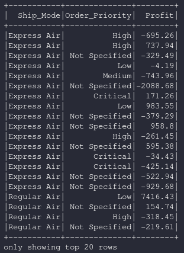
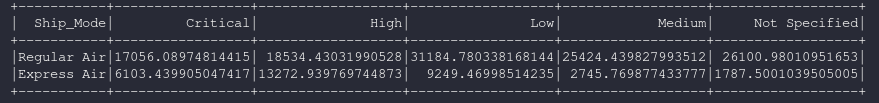

dataframe.pivot
Contents
dataframe.pivot¶
pivota una columna del actual dataFrame y realiza la agregación indicada. Hay dos tipos de versiones de pivot: Uno que requiere el caller para especificar la lista de distintos valores para pivotar, y uno que no.
- GroupedData.pivot(pivot_col, values=None)¶
- Parámetros:
pivot_col: string
El nombre de la columna por la cual se quiere pivotar
Ejemplos:
Pivot Simple¶
Dataframe base para los ejemplos: https://www.kaggle.com/anuvagoyal/sales-store-product-details
#Imports
from pyspark.sql import SparkSession, dataframe
spark = SparkSession.builder.appName('data_processing').getOrCreate()
from pyspark.sql.types import *
#Código
df = spark.read.csv("./datasets/Salesstore.csv", quote='"', escape='"', sep=",", header=True)
#FloatType se encuentra dentro de pyspark.sql.types, por eso el import.
df = df.withColumn("Profit",df["Profit"].cast(FloatType()))
df = df.select(["Ship_Mode","Order_Priority","Profit"])
#La columna dentro de pivot proporcionará los nombres de las columnas
df = df.groupBy("Ship_Mode").pivot("Order_Priority").sum("Profit")
df.show()
Datos de Entrada |
Resultado |
|---|---|
|  |  |
Importante
Se realiza el cast del campo “Profit” a decimal dado que el dataset de prueba es un csv y los campos del esquema son todos string, para el cast se usa FloatType() que se encuentra dentro de pyspark.sql.types.
df = df.withColumn("Profit",df["Profit"].cast(FloatType()))